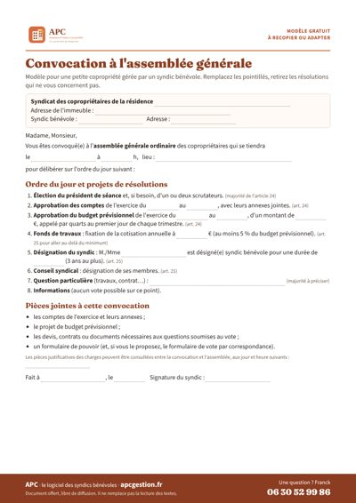
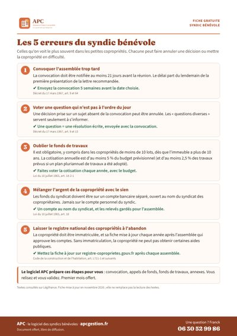

3 documents gratuits pour le syndic bénévole
Prêts à servir dans une petite copropriété. Pas d'inscription, pas d'adresse email à donner : vous cliquez, vous téléchargez. Vous pouvez les transmettre librement.

Modèle de convocation d'assemblée générale + pouvoir
L'ordre du jour type, les pièces à joindre, les 6 vérifications avant d'envoyer, les majorités, et un modèle de procuration. 2 pages.
TéléchargerPDF · 80 Ko
Tableau de répartition des charges (moins de 10 lots)
Vous écrivez vos lots, leurs tantièmes et votre budget : la part de chacun et l'appel de chaque trimestre se calculent seuls. Il vérifie aussi le minimum du fonds de travaux.
TéléchargerExcel · s'ouvre aussi avec LibreOffice

Les 5 erreurs du syndic bénévole
Convocation tardive, vote hors ordre du jour, fonds de travaux oublié, compte bancaire, registre : ce qu'il faut faire à la place. 1 page.
TéléchargerPDF · 60 Ko
Et si tout ça se préparait tout seul ? Le logiciel APC prépare vos convocations, vos appels de fonds et vos annexes à partir de vos papiers. Vous relisez, vous validez. Premier mois offert.
Une question ? Appelez Franck : 06 30 52 99 86
Documents mis à jour en novembre 2026, d'après la loi du 10 juillet 1965 et le décret du 17 mars 1967 (Légifrance). Ils ne remplacent pas la lecture des textes ni le règlement de votre copropriété.